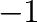

Next: Multiple comparisons Up: Dynamic programming for sequence Previous: Local versus global alignment Contents Index
Each scoring matrix contains a flag determining whether it is a distance or similarity matrix. An appropriate optimization is used automatically. This is achieved by using exactly the same code except that one side of comparisons is multiplied by  when dealing with similarities as opposed to distances.